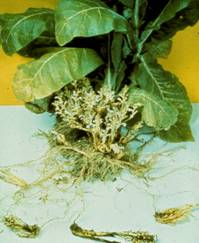
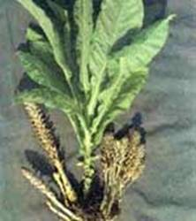

TOBACCO :: MAJOR DISEASE :: BROWN RAPE
Broom rape - Orobanche cernua var. desertorum
Symptoms
The affected tobacco plants are stunted and show withering and drooping of leaves to wilting. These indicate underground parasitism of the tobacco roots by the parasite. The young shoot of the parasite emerges from the soil at the base of the plants 5-6 weeks after transplanting. Normally, it appears on clusters of 50-100 shoots around the base of a single tobacco plant. The plants which are attacked very late exhibit no external symptoms but the quality and yield of leaves are reduced.
|  |  |
Parasite
It is a total root parasite. It is an annual, fleshy flowering plant with a short, stout stem, 10-15 inches long. The stem is pale yellow or brownish red in colour and covered by small, thin, brown scaly leaves and the base of the stem is thickened. White-coloured flowers appear in the leaf axils. The floral parts are well developed with a lobed calyx, tubular corolla, superior ovary, numerous ovules and a large four-lobed stigma. The fruits are capsules containing small, black, reticulate and ovoid seeds.
Disease cycle
The seeds of the parasite remain dormant in the soil for several years. Primary infection occurs from the seeds in the soil. The seeds spread from field to field by irrigation water, animals, human beings and implements. The dormant seeds are stimulated to germinate by the root exudates of tobacco and attach itself, to the roots by forming haustoria. Later, it grows rapidly to produce shoot and flowers. Orobanche also attacks other crops like brinjal, tomato, cauliflower, turnip and other cruciferous crops.
Management
- Rogue out the tender shoots of the parasite before flowering and seed set.
- Spray the soil with 25 per cent copper sulphate.
- Spray 0.1 per cent Allyl alcohol.
- Apply few drops of kerosene directly on the shoot.
- Grow decoy or trap crops like chilli, moth bean, sorghum or cowpea to stimulate seed germination and kill the parasite.